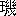

石敢当
今東光君は好学の美少年、「文芸春秋」二月号に桂川中良の桂林漫録を引き、大いに
古琉球風物詩集の著者、佐藤惣之助君の無学を
嗤ふ。
瀟麗の文章風貌に
遜らず、風前の玉樹も
若かざるものあり。唯疑ふ、今君亦
石敢当の起源を知るや否や。
今君は桂川中良と共に
姓源珠の説を信ずるものなり。されど石敢当に関する説は姓源珠に出づるのみにあらず、
顔師古が
急就章（史游）の註にも、「衛有石※
［＃「石＋昔」、186-上-10］鄭有石癸斉有石之紛如其後亦以命族石敢当」とあり。その何れを正しとすべき
乎、何人も疑ひなき能はざるべし。徐氏筆精に云ふ「二説大不相

亦日用不察者也」と。然らばその起源を知らざるもの、
豈佐藤惣之助君のみならんや。桂川中良も亦知らざるなり。今東光も亦知らざるなり。知らざるを以て知らざるを
嗤ふ、山客亦何ぞ嗤はざるを得んや。
按ずるに
鍾馗大臣の如き、
明皇夢中に見る所と
做すは
素より
稗官の
妄誕のみ。石敢当も亦実在の人物ならず、
無何有郷裡の英雄なるべし。もし又更に
大方の士人、石敢当の出処を知らんと欲せば、秋風
禾黍を動かすの辺、孤影蕭然たる
案山子に問へ。
猥談
聞説す、
我鬼先生、佐佐木味津三君の文を称し、
猥談と題するを
勧めたりと。何ぞその無礼なるや。佐佐木君は温厚の君子、幸ひに先生の言を
容れ、君が
日星河岳の文字に自ら題して猥談と云ふ。君もし血気の壮士なりとせんか、
当に
匕首を懐にして、先生を刺さんと誓ひしなるべし。その文を猥談と称するもの明朝に
枝山祝允明あり。允明、字は
希哲、
少きより文辞を攻め、奇気
甚縦横なり。一たび筆を
揮ふ時は千言立ちどころに
就ると云ふ。又書名あり。筆法
遒勁、風韻蕭散と称せらる。その内外の二祖、
咸な当時の
魁儒たるに
因り、希哲の文、典訓を
貫綜し、古今を
茹涵す。大名ある
所以なり。然りと
雖も佐佐木君は
東坡再び出世底の才人、枝山等の遠く及ぶ所にあらず。この人の文を猥談と呼ぶは
明珠を
魚目と呼ぶに似たり。山客、
偶「文芸春秋」二月号を読み、我鬼先生の愚を
嗤ふと共に佐佐木君の
屈を歎かんと欲す。佐佐木君、請ふ、安心せよ。君を知るものに山客あり
矣。
赤大根
江口君はプロレタリアの文豪なり。「文芸春秋」二月号に「切り捨御免」の一文を寄す。論旨は
昆吾と鋭を争ひ、文辞は
卞王と光を競ふ。真に当代の盛観なり。江口君論ずらく、「星霜を
閲すること僅に一歳、プロレタリアの論客は容易に論壇を占領せり」と。何ぞその壮烈なる。江口君又論ずらく、「創作壇の一の
木戸、二の木戸、本丸も何時かは落城の
憂目を見ん」と。何ぞその悠悠たる。江口君三たび論ずらく、「プロレタリア文学勃興と共に、
俄かに色を染め加へし
赤大根の輩出山の如し」と。何ぞその痛快なる。唯山客の
頑愚なる、もしプロレタリアに急変したる小説家、批評家、戯曲家を呼ぶに赤大根を以てせんか、その論壇を占領し、又かの創作壇の一の木戸、二の木戸、
乃至本丸さへ占領せんとする諸先生も赤大根にあらざるや否や、多少の疑問なき能はず。
且山客の所見によれば、赤大根の繁殖したるはプロレタリア文芸の勃興以前、隣邦
露西亜の革命に端を発するものの如し。もし然りとせば江口君も、古色愛すべき赤大根のみ。もし又君の為に然らずとせんか、かの近来の赤大根は君の小説に感奮し、君の評論に
蹶起したる新鋭気鋭の青年にあらずや。君自身これが
染上げを
扶け、君自身これを赤大根と
罵る、無情なるも亦甚しいかな。君
聴け、
啾啾赤大根の
哭、文壇の夜気を動かさんとするを。然れども古人言へることあり。「英雄
豈児女の情なからんや」と。山客亦厳に江口君が有情の人たるを信ぜんと欲す。もし有情の人と
做さんか、君と
雖も遂に赤大根のみ。君と雖も遂に赤大根のみ。
瑯※山客［＃「王＋牙」、187-下-3］
（大正十二年三月）
×
田中純君は「文芸春秋」のゴシツプの卑俗に陥るを論難し、「古今の文人、誰か
陽物の大小を云々せんや」と言へり。我等も亦田中君の義憤に声援するを辞するものにあらず。然れども卑俗なるゴシツプを喜べるは古人も亦今人に劣らざりしが如し。
谷三山、森田
節斎両家の筆談を録せる「二家筆談」と言ふ書ある由、（三山は
聾なりし故なり。）我等は未だその書を見ねど、
市島春城氏の「随筆
頼山陽」に引けるを読めば、古人も亦田中君の信ずる如く陽物の大小に冷淡ならず。否、
寧ろ今人よりも溌溂たる興味を有したるが如し。
「山陽しばしば画師
竹洞の大陽物をなぶる。竹洞大いに怒り、自ら陽物を書き、『山陽先生、余の陽物を以て大なりと為す。拙者の
陰茎、僅に
此の如し』とかきて山陽に贈る。画工小田百合座に在り。曰く、『是は
縮図であらう、原本必ず大なり焉。』一座大笑す。（是より文人、竹洞を名づけて縮図先生と号す。）」（原文に交へたる漢文は
仮名まじりに書き改めたり。）
我等は今人は
買冠らねど、古人を買ひ冠ることは
稀なりと為さず。又同じ今人にしても、海の
彼岸にゐる文人を買ひ冠ることは
屡なり。然れども彼等も実際は我等と大差なき人間なるべし。或は我等の
几側に侍せしめ、講釈を聞かせてやるに足るものも存外少からざらん乎。と言へば大言壮語するに似たれど、
兎に
角彼等を冷眼に見るは衛生上にも幾分か必要なるべし。
×
今人を
罵るの危険なることは
趙甌北の「
簷曝雑記」にその好例ありと言ふべし。南昌の人に
李太虚と言ふものあり。明の
崇禎中に
列卿と
為る。国変に死せず。
李自成に
降り、清朝
定鼎の後、脱し帰る。挙人
徐巨源と言ふものあり。
嘗之を非笑す。一日太虚の病を訪ふ。太虚自ら言ふ、「病んで
将に
起たざらんとす」と。巨源曰、「公の寿正に長し。必ず死せじ」と。之を
詰れば則ち曰、「甲申乙酉に（明の亡びたる〔二字欠〕の末年なり。）死せず。則ち更に死期無し」と。太虚怒る。これは怒るのも
尤もなり。更に又巨源、一劇を
撰す。この劇は太虚及び
 芝麓
芝麓賊に降り、後に清朝の兵入るを聞くや、急に逃れて杭州に至り、追兵の至るに驚いて、
岳飛墓前、鉄鋳の
秦檜夫人の
跨下に
匿る、
偶この鉄像の
月事に値ひ、兵過ぎて跨下を這ひ出せば、両人の頭皆血に汚れたるを描けるものなり。太虚この劇の流行を聞き、丁度南昌に来れる
芝麓と共に、
密かに
歌伶を其の家に召し、夜半之を演ずるを
観る。演じて夫人の跨下を出づるに至るや、両人覚えず
大哭して曰、「名節地を
掃ふこと
此に至る。夫れ
復何をか言はん。然れども
孺子の為に
辱めらるること此に至る。必ず殺して以て
忿念を
洩らさん」と。
乃ち人をして才人巨源を
何処かの
逆旅に刺殺せしめたりと言ふ。
按ずるに自殺に
怯なるものは、他殺にも怯なりと言ふべからず。巨源のこの理を
辨へず、
妄りに今人を罵つて
畢に刀下の
怨鬼となる。常談も
大概にするものなりと知るべし。
（大正十二年）